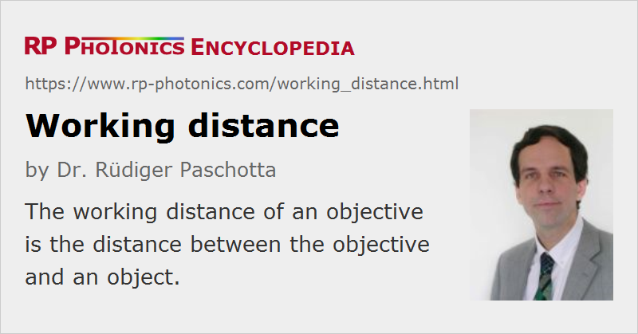

Working Distance
Definition: the distance between an objective and the object
German: Arbeitsabstand
How to cite the article; suggest additional literature
Author: Dr. Rüdiger Paschotta
The working distance of an objective is the distance between the objective and the object. That quantity is relevant in various situations; some examples:
- When using a photo camera for imaging insects, for example, it is beneficial to have some working distance in order not to irritate the insects. That can be a problem with some macro objectives.
- A microscope objective may have a very small working distance of less than 1 mm in cases with large magnification. That can be inconvenient with some kind of objects. It also makes it difficult to illuminate the sample from the top, if this cannot be done through the objective.
- In laser material processing, a large working distance can be important for different reasons. For example, one may avoid debris to be deposited on the optics. Also, one can more easily move the beam focus over large distances if one only needs to slightly turn a laser head which is placed in a large distance. In such situations, a large working distance is only possible if one has a high beam quality.
In some cases, it may not be clear how exactly the mentioned distance is measured – for example, if some mechanical parts protude beyond the final lens. It should then be made clear what exactly is meant with the working distance.
Note that the working distance is not necessarily the same as the front focal distance. Even if the object is placed in a beam focus, that focus does not need to lie in the focal plane if the input light of the objective is not collimated.
Questions and Comments from Users
Here you can submit questions and comments. As far as they get accepted by the author, they will appear above this paragraph together with the author’s answer. The author will decide on acceptance based on certain criteria. Essentially, the issue must be of sufficiently broad interest.
Please do not enter personal data here; we would otherwise delete it soon. (See also our privacy declaration.) If you wish to receive personal feedback or consultancy from the author, please contact him e.g. via e-mail.
By submitting the information, you give your consent to the potential publication of your inputs on our website according to our rules. (If you later retract your consent, we will delete those inputs.) As your inputs are first reviewed by the author, they may be published with some delay.
See also: objectives
and other articles in the category general optics
|  |
If you like this page, please share the link with your friends and colleagues, e.g. via social media:
These sharing buttons are implemented in a privacy-friendly way!